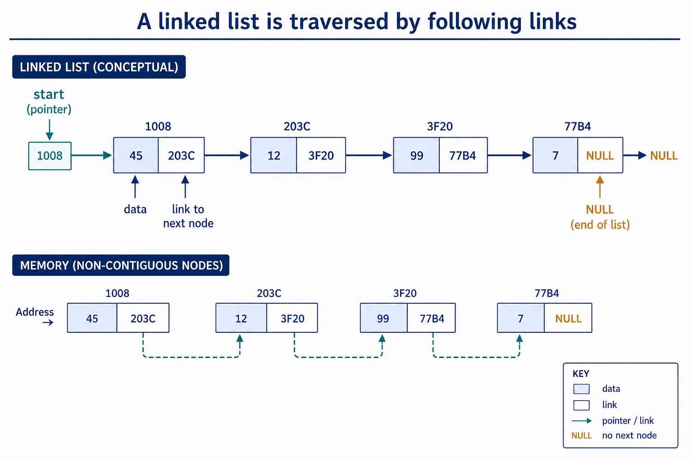

Stack, queue and linked-list features; justify a structure: Linked-list features and operations
Visual overview
A linked list is traversed by following links

Visual transcript
- A start pointer identifies the first node.
- Each node stores data and a link to the next node.
- The last link is NULL and nodes need not occupy adjacent memory locations.
Core explanation
Choose and justify a stack, queue or linked list from its LIFO, FIFO or linkage features. Add, edit and delete data in these ADTs and implement them using arrays; pseudocode for the ADT operations is not required by the syllabus.
An abstract data type (ADT) is a collection of data and a set of operations on those data. The permitted operations and their effects define the ADT; its internal storage can change without changing that behaviour. Stack, queue and linked list are examples of ADTs.
A stack is LIFO: add with push and delete with pop at the top. A queue is FIFO: add with enqueue at the rear and delete with dequeue at the front. A linked list stores data plus a next pointer/index in each node; start identifies the first node and null ends the chain.
All three can be implemented using arrays and state variables or indexes. Stack uses an array with a top/stack pointer; queue uses an array with front and rear; linked list uses Data and Next arrays (or an array of node records), start and a free list. Candidates must be able to add, edit and delete data conceptually, but the syllabus does not require pseudocode for these ADT operations.